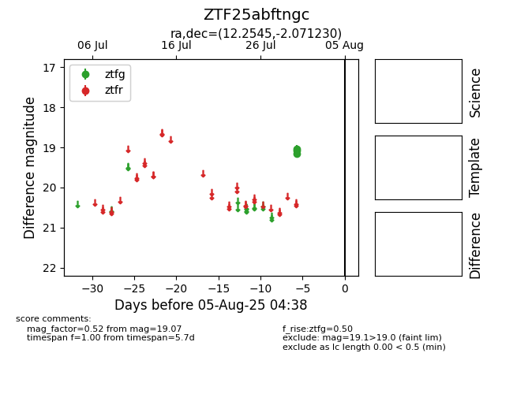

Target ZTF25abftngc at 2025-08-05 04:38, see:
FINK: fink-portal.org/ZTF25abftngc
Lasair: lasair-ztf.lsst.ac.uk/objects/ZTF25abftngc
ALeRCE: alerce.online/object/ZTF25abftngc
alt names
ZTF25abftngc (ztf,fink)
coordinates:
equatorial (ra, dec) = (12.2545,-2.07123)
galactic (l, b) = (121.5046,-64.93627)
photometry
last ztfg=19.07
3 ztfg detections
